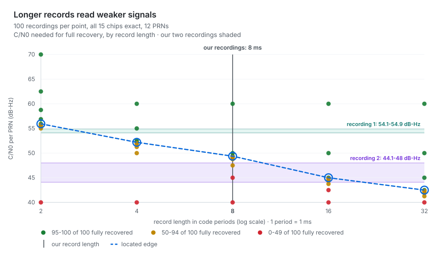
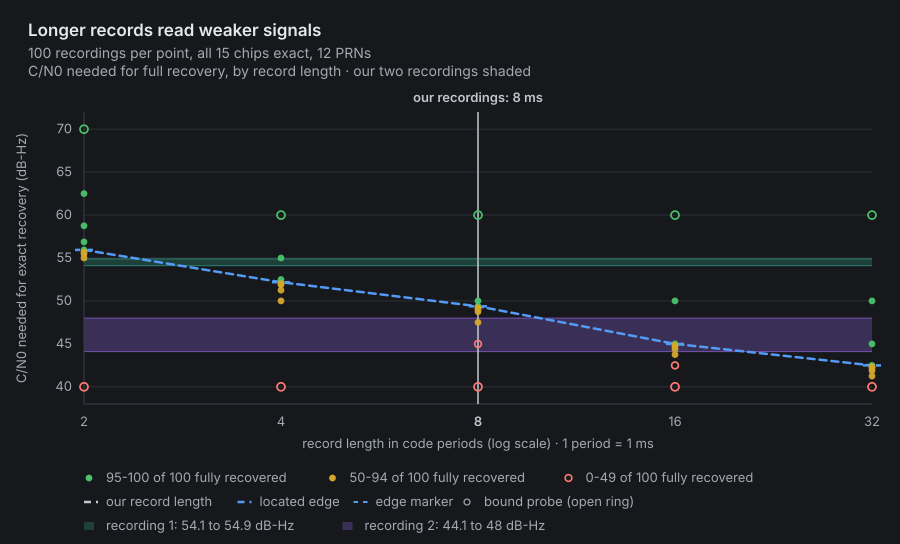

One rule modified 12 PRNs
gnss_observation.nc holds 8 ms of twelve GPS L1 C/A signals on one carrier. The same mask flips each 1023-chip code. The mask moves two chips for each step in the PRN index.
prn_index is the PRN number, starting at 1. fibonacci(i) is the i-th Fibonacci number: 1, 1, 2, 3, 5, 8, and so on.
def flipped_chips(prn_index: int) -> list[int]:
x = 1022 - 2 * prn_index
chips = [x]
i = 1
while x - fibonacci(i) >= 0:
x = x - fibonacci(i)
chips.append(x)
i += 1
return chipsflipped_chips(1) returns these fifteen chips. Recording 1 supports all of them. Recording 2's extractor drops one, chip 987.
34, 411, 644, 788, 877, 932, 966, 987, 1000, 1008, 1013, 1016, 1018, 1019, 1020
solve.py is the whole solution in one command: acquisition, isolation, chip readout, the shift search, the rule, and the evidence. It applies closed_form_flips to both recordings and writes six files next to each recording.
data/<name>_acquisition.csv: every searched PRN with its Doppler, code phase and C/N0.data/<name>_joint_flips.csv: PRN, shift, chip index, and the same chip in PRN 1's coordinates.data/<name>_modified_positions.csv: the same positions, PRN and chip index only.data/<name>_transmitted_codes.csv: one row per PRN, with both 1023-chip codes space separated and the modified indexes beside them.data/<name>_transmitted_codes.npz: the same as two 12 × 1023 arrays.data/<name>_solution.json: the whole answer. Itscodeskey holds one row per PRN withprn,transmitted_code(all 1,023 chips),original_code(the published IS-GPS-200 C/A code, all 1,023 chips), andmodified_indexes, which is exactly where the two differ.rule.closed_form_flipsandrule.closed_form_matchessit beside it.
solve.py refuses to write a code that is not ±1 or whose changed chips differ from the recovered flips. On recording 1 closed_form_matches is true for all twelve PRNs. On recording 2 it is false for all twelve, because each PRN's list is missing the same one position, 987. That is one missing chip, not twelve faults.
1. The twelve PRNs, and the data bit
gnss_observation.nc holds 32,736 complex samples at 4.092 MHz. The record is 8 code periods. Each code period lasts 1 ms and contains 1,023 chips. Each chip has 4 samples.
The centre frequency is 1575.42 MHz. The file does not name the PRNs. The search has to find them.
For each candidate PRN and each trial Doppler, correlate the recording with that PRN's published C/A code times a carrier. The peak over code phase is the detection statistic. One millisecond at 4 samples per chip is 4,092 samples.
The signal adds in amplitude. The noise adds in power. The gain is $10\log_{10}(4092) = 36.1$ dB. A 55 dB-Hz signal is invisible in the raw samples. After correlation it stands about 30 dB above the floor.
Coherence dies when the carrier rotates half a cycle across one code period. The coarse Doppler step is $1/(2\,\text{ms}) = 500$ Hz. A fit across the whole 8 ms tightens that to a fraction of a hertz. The search span is the largest ground-receiver line-of-sight speed, about ±5.2 kHz.
Twelve PRNs clear the floor by 1,260× to 1,930×. The strongest satellite that misses the cut is PRN 165, at 33.5×. C/N0 is 54.1 to 54.9 dB-Hz. The file declares 55. Doppler uncertainty on the twelve is 1.4 to 2.0 Hz.
| PRN | Doppler | ± Hz | Code phase | Peak / floor | C/N0 |
|---|---|---|---|---|---|
| 1 | −2703.56 | 1.45 | 31.243 | 1501 | 54.5 |
| 2 | −2113.79 | 1.45 | 109.243 | 1616 | 54.6 |
| 3 | −1530.33 | 1.94 | 188.251 | 1498 | 54.5 |
| 4 | −935.78 | 1.44 | 274.246 | 1613 | 54.6 |
| 5 | −347.34 | 1.93 | 351.258 | 1537 | 54.4 |
| 6 | 270.98 | 1.92 | 438.000 | 1558 | 54.9 |
| 7 | 874.97 | 1.44 | 521.998 | 1930 | 54.6 |
| 8 | 1440.86 | 1.99 | 604.001 | 1440 | 54.6 |
| 9 | 2053.38 | 1.46 | 686.997 | 1434 | 54.5 |
| 10 | 2653.96 | 1.53 | 770.996 | 1260 | 54.1 |
| 11 | −1099.59 | 1.43 | 854.246 | 1647 | 54.7 |
| 12 | 1114.86 | 1.97 | 946.008 | 1389 | 54.3 |
Code phase is in chips, inside the 1 ms period. The fractional parts sit on 0 or 0.25, within about 0.01 chip. Four samples per chip put an integer-sample delay on that quarter-chip grid. The file declares an integer-sample delay. The fit landed on that grid.
The data bit does not flip
A navigation data bit lasts 20 ms. This record is 8 ms. At most one change can fall inside it. That change has to sit on a code-period boundary.
A π step in the prompt looks the same to a straight-line Doppler fit as a frequency error of about $1/(2 \times 4\,\text{ms})$. If the fit ignores the bit, the Doppler comes back tens of hertz wrong. The reported interval does not show that error.
The record does not start on a code boundary. The prompts are nine segments: a partial head, seven full periods, and a partial tail. For each PRN, choose the sign pattern whose de-rotated prompts have the largest coherent sum. The all-positive pattern is always a candidate. A real change has to beat it.
All twelve PRNs have sign +1 on all nine segments. No boundary wins. The bit stays the same across the 8 ms.
A global minus is the same as a π shift of the carrier. That phase already sits in the complex amplitude from the next step. This step shows that the bit does not change. It does not give a physical +1 apart from the phase reference.
2. Isolate each PRN
The recording is a sum. If you read one satellite while the other eleven are still in the samples, their cross-correlation sets the floor of every chip.
Build a unit replica $u_s$ from the published code, the measured Doppler, the measured code phase, and a constant data bit. The signals add, so one complex amplitude is a projection:
Wipe this satellite's carrier. Multiply by its nominal code. A chip that matches the published code reads $+A$. A flipped chip reads $-A$. The chip index comes from the measured code phase. The 1,023 numbers are already in that PRN's own code coordinates.
Measured amplitudes are 0.254 to 0.284. The file declares 0.278 per sample. The nominal replica is wrong on the fifteen flipped chips, so the projection is a little low. $(993/1023)\times 0.278 = 0.270$. The measured cluster sits on 0.270.
Cancellation uses the nominal codes. Those codes are wrong at the other satellites' flipped chips. That error sits at the other satellite's Doppler. When this satellite's carrier is wiped, the leftover rotates and averages down over the 8 ms. This satellite's own flips stay. They are at this Doppler and this code phase, so they remain minus signs in the chip vector.
3. Eight milliseconds is still too noisy
A chip reappears once per millisecond. The average uses eight occurrences, four samples each. That is 32 samples.
The ratio is about +4 dB. A sign test at 1.57 is too noisy to name a chip. After you remove the other satellites, the quiet chips measure a bit better.
The mean is about 0.28. The spread is about 0.12. The ratio is about 2. That is still too weak to name fifteen flips out of 1,023.
A true flip is negative. A noise spike is also negative. The counts below use the mask from step 6 as a score. They do not use it as an input. Every PRN has more negatives than flips.
| PRN | Negative chips | True flips caught | False alarms | Missed |
|---|---|---|---|---|
| 1 | 37 | 15 / 15 | 22 | 0 |
| 2 | 32 | 15 / 15 | 17 | 0 |
| 3 | 31 | 15 / 15 | 16 | 0 |
| 4 | 37 | 15 / 15 | 22 | 0 |
| 5 | 32 | 15 / 15 | 17 | 0 |
| 6 | 21 | 15 / 15 | 6 | 0 |
| 7 | 35 | 15 / 15 | 20 | 0 |
| 8 | 30 | 15 / 15 | 15 | 0 |
| 9 | 32 | 15 / 15 | 17 | 0 |
| 10 | 29 | 14 / 15 | 15 | 1 |
| 11 | 28 | 15 / 15 | 13 | 0 |
| 12 | 38 | 15 / 15 | 23 | 0 |
PRN 6 is the cleanest, and it still has six false alarms. PRN 10 misses one real flip. A threshold on one PRN cannot separate 15 flips from 6 to 23 noise spikes. This file has only eight periods. The next navigation bit would arrive at 20 ms. There is no more time to average.
If the twelve looks are of one pattern, stacking them raises the signal by $\sqrt{12}$, about 10.8 dB. Step 3 does not show that they are one pattern. It shows that one PRN is not enough.
4. Same chips, or a shifted copy?
A threshold on one PRN cannot name that PRN's flips. This file has no more time to average. If each PRN's modified chips are an independent list, the record does not contain the answer.
The assignment says the modifications follow one common rule. That rule is the extra information. I did not know its form. Two forms were concrete enough to test.
The first form is identity. Every PRN flips the same chip indexes.
The second form is a shift. The sequence of flipped chips is the same, but it starts at a different index in each PRN's code. A constant number of chips per step in the PRN index is the simple case of that shift. That was the relation I chose to test.
Circular correlation is the test. Each soft vector $v_s[k]$ is already in PRN $s$'s own code coordinates, so a lag is a shift in chip index. If PRN $i$ and PRN $j$ carry the same dip pattern, moved by $d$ chips, their vectors peak at lag $d$. Lag 0 on every pair would mean the indexes match. A lag that steps with the PRN index would mean the sequences are shifted copies. A lag with no pattern would reject both forms.
The correlation is:
The winning lag is exactly $-2(i-j)$ for every pair. All 66 pairs match. None miss.
Column 1 is each PRN against PRN 1. The peaks are $0, -2, -4, \ldots, -22$. That is $-2(s-1)$.
The twelve soft vectors are one pattern. Each step up in PRN index slides that pattern two chips earlier. PRN 3 and PRN 8 have different code phases in the recording. The shift of −2 shows up only after you write each vector in its own chip index.
5. Line the dips up, then add
Roll PRN $s$ by $+2(s-1)$. Its dips then land on PRN 1's chip indexes. Average the twelve:
The flips add twelve times. Independent noise adds as $\sqrt{12}$. The gain is $10\log_{10}(12) = 10.8$ dB. The spread of a quiet chip falls from about 0.12 on one PRN to 0.038 on the average.
Sort $C$. The sign changes from minus to plus after exactly fifteen chips. The weakest of those fifteen is −0.199. The next chip, 631, is still positive at +0.151. The gap is about nine quiet-chip standard deviations.
| Chip | Consensus | Quiet σ |
|---|---|---|
| 34 | −0.274 | −14.5 |
| 411 | −0.296 | −15.1 |
| 644 | −0.293 | −15.0 |
| 788 | −0.260 | −14.1 |
| 877 | −0.259 | −14.1 |
| 932 | −0.215 | −13.0 |
| 966 | −0.243 | −13.7 |
| 987 | −0.273 | −14.5 |
| 1000 | −0.237 | −13.5 |
| 1008 | −0.199 | −12.5 |
| 1013 | −0.357 | −16.7 |
| 1016 | −0.233 | −13.4 |
| 1018 | −0.250 | −13.9 |
| 1019 | −0.292 | −15.0 |
| 1020 | −0.263 | −14.2 |
| 631 (next) | +0.151 | still positive |
Quiet σ uses the chips outside this set. Their mean is +0.279 and their σ is 0.038. That σ describes the gap. The sign change chooses the chips. The change happens at fifteen.
A second check builds the mask on eleven PRNs and applies it to the twelfth. A correct chip raises that PRN's correlation. A wrong chip lowers it. The best average held-out gain is 15 chips, at +0.244 dB. Fourteen is +0.231 dB. Sixteen is +0.225 dB.
6. What the fifteen indexes are
Sort the fifteen chips and walk up.
| From | To | Gap |
|---|---|---|
| 34 | 411 | 377 |
| 411 | 644 | 233 |
| 644 | 788 | 144 |
| 788 | 877 | 89 |
| 877 | 932 | 55 |
| 932 | 966 | 34 |
| 966 | 987 | 21 |
| 987 | 1000 | 13 |
| 1000 | 1008 | 8 |
| 1008 | 1013 | 5 |
| 1013 | 1016 | 3 |
| 1016 | 1018 | 2 |
| 1018 | 1019 | 1 |
| 1019 | 1020 | 1 |
Same fact, read backward from chip 1020. Each step is the next Fibonacci number.
| k | Step | Sum so far | Chip = 1020 − sum |
|---|---|---|---|
| 0 | none | 0 | 1020 |
| 1 | 1 | 1 | 1019 |
| 2 | 1 | 2 | 1018 |
| 3 | 2 | 4 | 1016 |
| 4 | 3 | 7 | 1013 |
| 5 | 5 | 12 | 1008 |
| 6 | 8 | 20 | 1000 |
| 7 | 13 | 33 | 987 |
| 8 | 21 | 54 | 966 |
| 9 | 34 | 88 | 932 |
| 10 | 55 | 143 | 877 |
| 11 | 89 | 232 | 788 |
| 12 | 144 | 376 | 644 |
| 13 | 233 | 609 | 411 |
| 14 | 377 | 986 | 34 |
The gaps, small to large, are the Fibonacci sequence: 1, 1, 2, 3, 5, 8, 13, 21, 34, 55, 89, 144, 233, 377. Each term is the sum of the two before it.
How the function was built
-
Sort the fifteen chips of PRN 1. The gaps, small to large, are 1, 1, 2, 3, 5, 8, 13, 21, 34, 55, 89, 144, 233, 377. That is the Fibonacci sequence.
-
The largest chip is 1020. Start there. Subtract
fibonacci(1), thenfibonacci(2), and so on. Each landing is one of the fifteen chips. The last landing is 34. -
The next Fibonacci number is 610. 34 − 610 = −576. −576 is not a chip index. The walk must stop before that subtraction. That is why the loop tests
x - fibonacci(i) >= 0before it changesx. A loop that subtracts first, then checksx > 0, would append −576. -
PRN 2 has the same fifteen chips, each two indexes lower. PRN 3 is four lower. PRN
sis2(s − 1)lower.
-
The start chip for PRN
sis1020 − 2(s − 1). If the argument is the PRN number, and it starts at 1, that is the same number as1022 − 2 * prn_index. PRN 1 starts at 1020. PRN 12 starts at 998. That is the first line of the function. -
The rest of the function is the walk from that start chip. Put the start chip in the list. Then subtract
fibonacci(1),fibonacci(2), and so on, and keep a landing only when it is at least 0. Three chips from this walk are 34, 411, and 644. They are the last three steps, 377, 233, and 144. -
flipped_chips(12)includes 12 and 998. Those are 34 − 22 and 1020 − 22. The function returns 15 chips for each of PRNs 1 through 12. On recording 1 those chips are exactly the recovered set.
Does this explain the file?
Fifteen flipped chips change a code in 15 of 1,023 places. The recovered code and the nominal code agree on 1,008 chips. They disagree on 15.
The correlation is not that count. Each chip is +1 or −1. An agreeing chip adds +1 to the inner product. A disagreeing chip adds −1. Fifteen disagreements therefore remove 30 from the all-agree sum of 1,023:
The modified replica can gain at most about +0.259 dB over the nominal one. The published solution, on this file, measures +0.188 to +0.338 dB per PRN. The mean is +0.249 dB. PRN 9 lands at +0.338 dB, above the expected value. That is noise on one satellite. The held-out count still peaks at 15. A wrong chip lowers the left-out correlation.
Rebuild every satellite from the recovered codes and subtract. The numbers are in data/gnss_observation_solution.json.
| Residual power | |
|---|---|
| Nominal codes | 1.042 |
| Recovered codes | 0.991 |
| Noise variance | 1.051 |
The recovered model leaves the noise floor. The nominal model leaves extra power. That extra power is the part of the signal the flips hid.
Recording 1 declares random_seed = 20261111. Rebuild that noise and subtract it. The recovered codes then match the file at correlation 0.9998. The nominal codes match at 0.9858. FINDINGS.md records this check. It confirms the positions. The Fibonacci reading comes from the equality in step 6.
Recording 2 is noisier, so chip 987 looks missing
gnss_observation2.nc has the same twelve PRNs and the same slope, 2 chips per PRN index. The signals are fainter. Published C/N0 is 44.1 to 48.0 dB-Hz, against 54.1 to 54.9 on recording 1. Per-sample amplitude is about 0.12 to 0.15, against 0.28. Eight milliseconds of a fainter signal gives a noisier chip reading.
After the align-and-add, a flip is a negative consensus. Thirteen of the fifteen rule chips are clearly negative, from −1.38σ to −3.69σ. The other two are the weakest of that fifteen, not chip numbers 14 and 15.
| Chip | Among the 15 | Consensus | PRNs negative | Reading |
|---|---|---|---|---|
| 1008 | 2nd weakest | −0.92σ | 9 / 12 | still a flip, a weak one |
| 987 | weakest | −0.42σ | 6 / 12 | half the PRNs disagree |
| other 13 | stronger | −1.38 to −3.69σ | 7 to 12 / 12 | same chips as recording 1 |
Asked to name chips with no list supplied, this file keeps 14 and drops 987. Build the mask on 11 PRNs and score the 12th. The best count is 14, at +0.235 dB. Adding 1008 to a 13-chip core raises that gain by 0.010 dB. Adding 987 lowers it by 0.009 dB.
Does a real flip read this low?
In the table above, a flip is negative. For the test below, the sign is turned around, so a clean flip reads +1 and an unflipped chip reads about 0. Chip 987 then reads +0.14 ± 0.31. A clean flip on this file would read about +1. +0.14 is a third of the error bar.
Another pass over this file cannot tell a skipped chip from a bad noise draw. The test is a new recording, with the flip put in on purpose, at this strength.
One point needs care. Recording 2's twelve PRNs span 44.1 to 48.0 dB-Hz, mean 46.5. The trials below ran at 47.5 dB-Hz, near the loud end of that range. A single run at one level cannot cover a 4 dB spread. 47.5 tests the easy end of this file.
The same chain, recording 2's Dopplers, a known 15-chip mask, and 8 ms, ran for 1000 trials at 47.5 dB-Hz. The score is whether the planted 15 chips came back exactly.
| Lowest true flip | Chips kept | |
|---|---|---|
| clean flip, no noise | +1.00 | 15 |
| recording 2, chip 987 | +0.14 | 14 |
| 1000 trials, 47.5 dB-Hz, truth known | exact set 839 / 1000 | 75 drop 1, 9 drop 2, 76 add extras, 1 swap |
| 100 trials, 55 dB-Hz, truth known | median +0.77, worst +0.61 | 15 in 100 |
| recording 1, chip 987 | +0.98 | 15 |
At 47.5 dB-Hz the exact 15-chip set came back in 839 of 1000 trials. 75 trials dropped one true chip and added nothing. That is the miss recording 2 shows. Nine dropped two true chips. 76 kept all 15 and added extras. One reported 15 chips but swapped one. A single dropped chip is 7.5 in 100. Any mistake is 16 in 100.
At 55 dB-Hz the 100 trials never dropped a chip, and the lowest true flip stayed above +0.61. Recording 1 reads chip 987 at +0.98. Same chip, stronger signal, obvious flip.
Chip 1008 is not in that tail. Nine of twelve PRNs read it negative, and adding it raises the held-out gain. The chip that looks missing is 987.
Why this is noise, not a second rule
The extractor is not robust at 47.5 dB-Hz. In 1000 trials with a known 15-chip mask, the same chain, and recording 2's Dopplers, it returned the exact set 839 times. Of the 161 misses, 75 dropped one true chip and added nothing. That is the failure recording 2 shows. Nine dropped two true chips and added nothing. 76 kept all 15 true chips and added extras. One reported 15 chips but swapped one of them. Any mistake is 16 in 100. A single dropped chip is 7.5 in 100.
Recording 1 is the file where that extractor does not drop chips: 100 of 100 trials at 55 dB-Hz returned the exact set. On that file, chip 987 reads +0.98. The same chip is flipped there. A rule that omits 987 cannot explain recording 1.
The other hypothesis is that recording 2 has the Fibonacci walk with one term deleted. Deleting 987 joins the gaps 13 and 21 into 34, so the steps are no longer the Fibonacci sequence. That deletion would also have to be invisible on recording 1, where the same chip is one of the strongest flips. Recording 2 is the file at the noise level where the extractor drops one chip about 75 times in 1000. The dropped chip is the one the stronger file already measured.
A search with no list supplied still stops at 14 on recording 2. Its posterior is P(14) = 0.9996. That is the extractor's count, not a second generator. Asked only about named chip 987, the same file prefers a flip by 36:1.
Where the chain breaks
The two assignment files are one point. python benchmark.py sweeps around that point, two noise seeds per cell. python breakpoints.py then measures a rate at each value: 100 independent recordings per point, bisected until the passing and breaking ends are one step apart. Neither reads gnss_observation.nc or gnss_observation2.nc.
Both build new recordings from the same signal model. The flipped chips, the Doppler and the delays are known before the chain runs.
A run passes only when every PRN is found, none extra, the shift is the true shift, and the recovered flip set matches the truth exactly. Doppler error, residual power and flip precision are recorded either way. One axis moves at a time. Everything else stays at the assignment case: 12 PRNs, 55 dB-Hz, 15 flips, 8 ms, slope 2.


breakpoints.py into assets/cn0_vs_duration_light.svg and _dark.svg.| Axis | Still exact | Where it breaks |
|---|---|---|
| C/N0 | The 95% edge is 49.4 dB-Hz. At 55 dB-Hz, 100 of 100 trials return the exact 15. At 47.5, 83 of 100 do. | 45 dB-Hz still finds all 12 PRNs. Only 26 of 100 then recover every chip. At 40, none do. |
| Flipped chips | 3 to about 240 of 1023. One run at 200 came back one chip short. | At 320 the shift search locks onto 343 or 684, about 1023/3 and 2 times 1023/3. At 400, 4 to 6 of 12 PRNs are detected. At 500, none are. A code flipped in K places keeps (1023 − 2K)/1023 of the nominal correlation. Acquisition then fades. |
| How many PRNs | 6 to 30, at 52 dB-Hz. | 1 PRN has nothing to shift against, so the slope is undefined. 2 to 4 miss chips. From 40 up, detection starts dropping PRNs: 78 of 80 at 80 PRNs, 197 to 202 of 210 at 210. |
| Record length | 4 ms and longer. | 2 ms loses chips. Two code periods are not enough to fit the phase slope and read the mask. |
| Doppler | All 12 at 0 Hz, within ±2 Hz, within ±20 Hz. Out to ±5.5 kHz with the default span. | ±5.8 kHz is outside the span, so it is invisible. Widen the span and ±6, ±10, ±15, ±20 and ±30 kHz come back exact. The limit is the search window. |
| Data bit flips mid-record | Exact. Worst Doppler error 3.7 Hz. | Before the sign pattern was in the fit, the same case returned about 100 Hz and claimed ±1.5 Hz. |
| No shared rule, or no flips | Reports 0 chips at 0.000 dB. | Does not invent a mask. That is the pass. |
You can decide a chip only after you stack the PRNs. Twelve PRNs buy $\sqrt{12}$, about 10.8 dB. Four PRNs buy 6 dB. That is why 2 to 4 PRNs miss chips.
A 2 ms record has less of the same gain, so it fails. A 4 ms record does not. If you flip too many chips, the nominal code no longer correlates. The search then never reaches the mask.
The assignment case is inside the exact region: 12 PRNs, 55 dB-Hz, 15 flips, 8 ms. Recording 2 sits on the C/N0 edge. That is why its 15th chip is the one the count can drop. BENCHMARK.md has the seed-by-seed tables.
The path, in one line each
- Search code × Doppler. Twelve PRNs, C/N0 about 55 dB-Hz, Doppler to about 2 Hz, code phase on the sample grid. Data bit constant. Absolute sign absorbed in the carrier phase.
- Project out the other eleven. One complex amplitude each. Own flips remain as minus chips.
- Eight periods still leave 21 to 38 negative chips per PRN, against 15 real flips. One PRN misses a real flip. A threshold cannot finish the job.
- One PRN cannot name its flips. A shared index list, or a shifted copy of that list, were the two rules worth testing. Circular correlation of every pair peaks at $-2(i-j)$.
- Roll, average. Exactly fifteen chips go negative. The sixteenth stays positive, nine standard deviations away.
- The gaps, small to large, are the Fibonacci sequence.
flipped_chips(prn)starts at1022 - 2*prnand steps back byfibonacci(i)while the result stays at least 0. - Recording 2 is the same mask, with lower C/N0, so the chip readings are noisier. Chip 987 reads +0.14. At 47.5 dB-Hz, 83 of 100 independent recordings return the exact 15; a longer 1000-trial run at the same point returned 839. 75 of those 1000 dropped one chip.
- The chain was broken on purpose, one axis at a time, then bisected over 100 independent recordings per point. The 95% edge is 49.4 dB-Hz, 5 code periods of record, 7 PRNs at the low end, 32 at the high end, and 140 flipped chips. Outside the Doppler span it was given, it finds nothing. With no shared rule, it reports 0 chips.